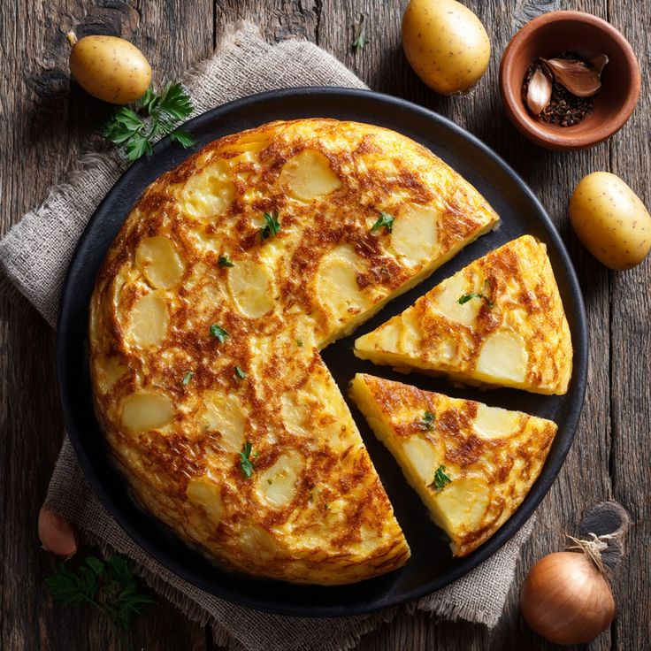

🥔 Tortilla de patatas (España)

Ingredientes (4 personas)
| Producto |
Cantidad |
| Patatas |
3 medianas |
| Huevos |
4 |
| Cebolla (opcional) |
1 pequeña |
| Aceite de oliva |
Al gusto |
| Sal |
Al gusto |
Elaboración
- Pela y corta las patatas en rodajas finas. Corta la cebolla en juliana si la usas.
- Fríe las patatas y la cebolla en abundante aceite hasta que estén tiernas. Escurre el exceso de aceite.
- Bate los huevos en un bol y mezcla con las patatas y la cebolla.
- Vierte la mezcla en una sartén y cocina a fuego medio, dando vuelta la tortilla para que se dore por ambos lados.
- Sirve caliente o a temperatura ambiente, cortada en porciones.
🍖 Jamón ibérico con pan con tomate (España)

Ingredientes (4 personas)
| Producto |
Cantidad |
| Jamón ibérico |
100 g |
| Pan tipo baguette |
4 rebanadas |
| Tomate maduro |
1 grande |
| Aceite de oliva |
Al gusto |
| Sal |
Al gusto |
Elaboración
- Tuesta ligeramente las rebanadas de pan.
- Frota el tomate maduro sobre el pan hasta que quede impregnado.
- Añade un chorrito de aceite de oliva y sal al gusto.
- Coloca las lonchas de jamón ibérico encima y sirve como aperitivo.